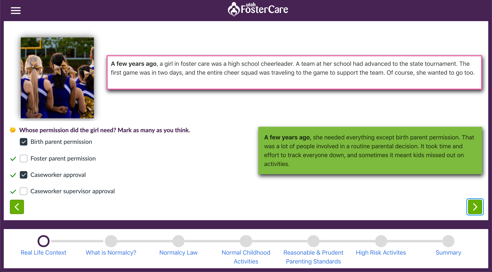

Customer Onboarding Ecosystem
Canopy
Knowledge Base Redesign
Entrata
Experience Basecamp
Qualtrics
Certification Program Design
Add your deliverable here
Graduate-level instructional design projects completed during the M.Ed. program at the University of Utah (2017–2019).

Needs analysis conducted to identify performance gaps and skill deficiencies across a client team — findings shaped the learning objectives, content scope, and delivery strategy for a full onboarding redesign.
Goal-setting framework built on ITIL best practices to align project deliverables with measurable business outcomes — used to define success criteria and stakeholder expectations before any development began.
Process flowcharts mapping current-state workflows and identifying friction points — delivered as part of a front-end analysis to guide curriculum structure and pinpoint where learner support was most needed.
Course storyboard outlining scene-by-scene structure, narration scripts, and interaction design for a multi-module e-learning program — used to align stakeholders before production began.
Prototype mockups created to test interface layouts and interaction patterns before full development — iterated based on SME and stakeholder feedback during the review cycle.
Functional prototype built to validate instructional design decisions and assessment approach before full-scale development — reviewed with client stakeholders to confirm alignment with defined learning goals.
Project development timeline defining milestones, dependencies, and owner assignments across a cross-functional team — kept the client and internal stakeholders aligned throughout a 12-week development cycle.
Content development deliverable translating SME knowledge into structured, learner-ready course material — written to align with identified performance objectives and the target audience's existing knowledge baseline.
Evaluation strategy defining formative and summative assessments tied to learning objectives — designed to measure knowledge transfer and provide actionable data for iterating on course content post-launch.
Heuristic evaluation and cognitive walkthrough of a learning interface — identified usability issues before launch and produced a prioritized findings report used to refine navigation and interaction patterns.
Structured client interview documentation capturing stakeholder expectations, success metrics, and project constraints — used to align the project team and establish a shared definition of done.
User testing plan and findings report evaluating learner experience with a course prototype — identified navigation pain points and comprehension gaps that were addressed before final delivery.
Full-cycle instructional design project for a non-profit client — from needs analysis and storyboarding through development and delivery of an online training program for prospective foster families in Utah.